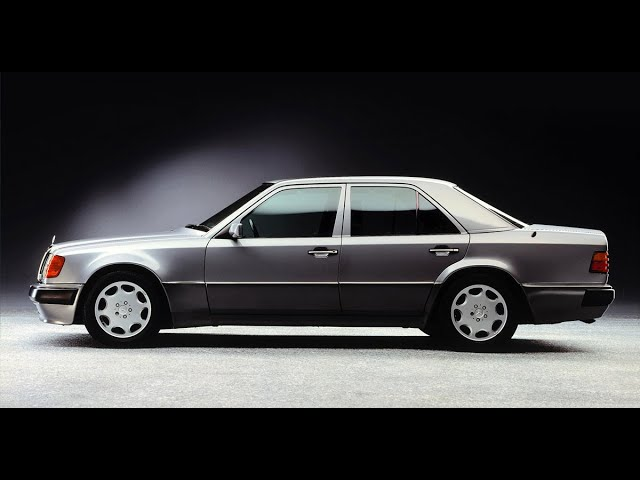

Mercedes-Benz · 1984 — 1997
Последний, который строили на века

Средний класс, который задал планку на десятилетия: строгий дизайн бюро Бруно Сакко, безупречная аэродинамика и инженерный запас прочности.
Одна платформа — пять характеров.
Основа семейства и символ эпохи. Такси, служебный автомобиль, семейная машина.
T-модель с огромным багажником и опциональным третьим рядом сидений.
Без центральной стойки: опускаешь все стёкла — и линия крыши парит.
Появился в 1991 году. Сегодня — один из самых желанных вариантов.
Удлинённая версия на шесть-восемь мест для отелей и посольств.
Волк в овечьей шкуре. Совместный проект с Porsche: V8 объёмом 5,0 литра, расширенные крылья и почти неотличимый от обычного седана облик. Собирали частично в Цуффенхаузене.
Журнал того, что сделано с моей машиной: фото, детали и впечатления.
Каждая доработка — отдельная страница.
«Его не продают — его передают.»Народная мудрость автолюбителей